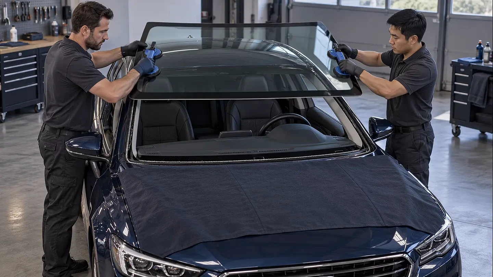
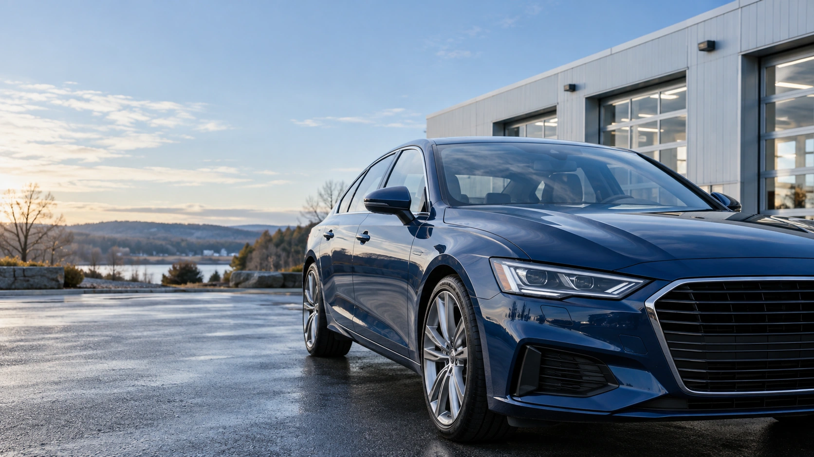
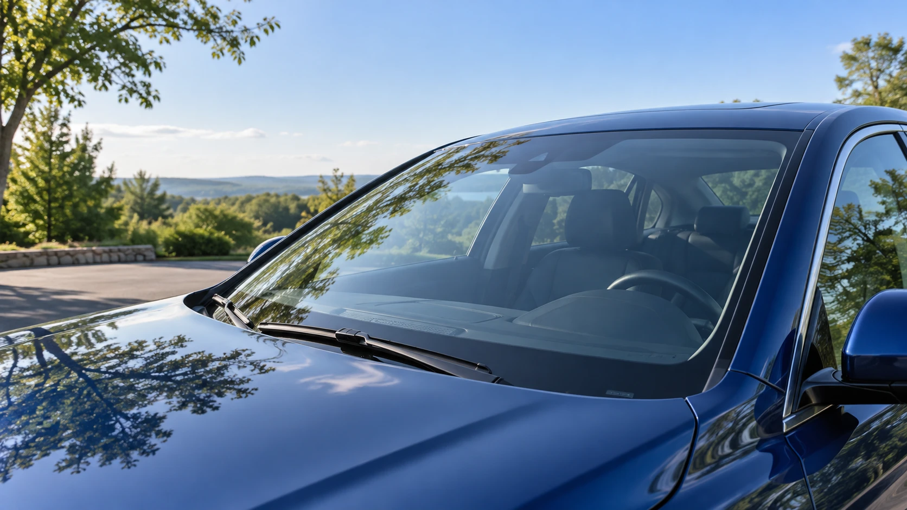

Auto glass replacement
Windshields and vehicle windows, replaced with care. Speak with EGP about your vehicle and glass.
Explore service

EGP brings auto glass repair and replacement to drivers across Central Connecticut. Local service, careful workmanship and a straightforward route back to your routine.
From a damaged windshield to a vehicle window, start with the details of your vehicle and let the team help you plan the next step.
More about usCare. Clarity. Convenience.
Windshields and vehicle windows, replaced with care. Speak with EGP about your vehicle and glass.
Explore serviceA closer look at the damage, with repair options for your windshield, windows and mirrors.
Explore serviceGlass service that comes to you in Meriden and surrounding Central Connecticut towns.
Explore serviceHelp coordinating your glass claim, arranging service and handling the related insurer billing.
Explore service
Locally ownedLocal service for drivers in Meriden and surrounding towns. Confirm your location with the team.
 Careful assessment
Careful assessmentTell EGP about your windshield, window or mirror damage. The team can recommend a suitable service.
 Straightforward value
Straightforward valueBring your written quote to EGP and ask about matching it. Discuss the details before arranging service.

Less disruptionFree mobile service helps you arrange glass work around your day. Contact EGP to confirm availability.
View serviceView serviceCoverage, scheduling and insurer coordination.
Read moreUse the quote service or talk directly with EGP.
Get a quoteFree mobile service in Meriden and surrounding towns.
Published by EGP · confirm your locationEGP will match a written quote.
Published by EGP · discuss applicable detailsAll work is guaranteed.
Published by EGP · ask for warranty termsHelp with insurer coordination and glass claims.
Published by EGP · coverage depends on your policyYes. EGP offers free mobile auto glass service in Meriden and surrounding Central Connecticut towns. Contact EGP to confirm your location and arrange service.
EGP can examine the damage and recommend an option for your windshield, window or mirror. Tell the team about your vehicle and the damage.
EGP coordinates glass claims with insurers. Confirm your coverage, deductible and any out-of-pocket cost before scheduling.
Use EGP’s existing online quote service or call 203-213-1257. EGP also offers written-quote matching; contact the team to discuss the details.
EGP states that its work is guaranteed and advertises a limited lifetime warranty. Ask for the applicable terms and exclusions for your service.